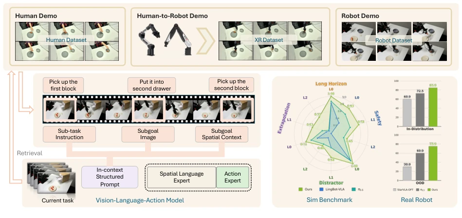
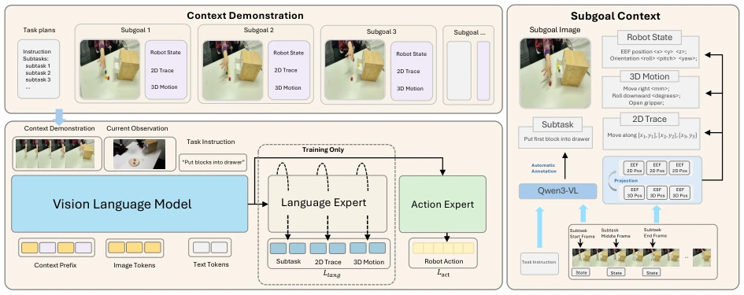
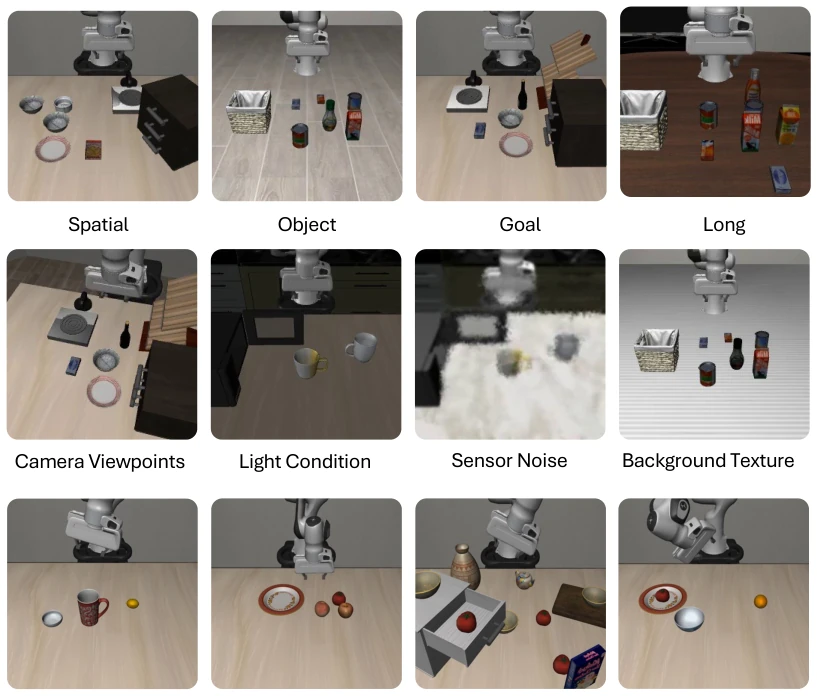
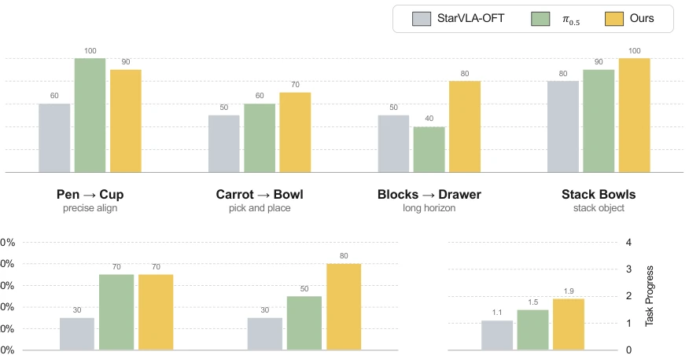
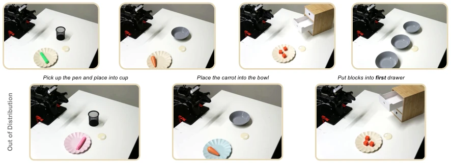

StellaVLA indeed took the top spot on the VLA-Arena leaderboard this time, leaving π0.5 far behind with a score of 0.63, which looks quite impressive. But upon closer thought, the core is upgrading "imitating actions" to "imitating reasoning", using structured language to decompose expert trajectories into sub-goals and motion descriptions. This approach is indeed stronger than pure pixel imitation in OOD scenarios, after all robots need to know "why to do" rather than "how hands move". However, Long Horizon tasks are still near zero under L2 difficulty, indicating this "structuring" cannot yet solve the fundamental defects of long-horizon planning. Additionally, although claiming zero manual annotation, it relies on large models like Qwen3-VL [1] for offline inference behind the scenes, and the cost is not low. Cutting off the language expert during inference to ensure real-time performance is a clever design, but who calculates the time cost of offline processing? In short, it is an important step in VLA generalization, but do not expect it to solve all long-horizon tasks.
The performance collapse of VLA models in out-of-distribution (OOD) scenarios is a longstanding problem [9]. Although existing In-Context Imitation Learning (ICIL) methods can adapt during testing, most directly concatenate raw trajectories, causing policies to only imitate surface actions (what) without understanding the underlying logic (why). This structural lack of behavioral inertia makes it difficult for models to generalize. StellaVLA attempts to solve this problem, by automating an offline process to convert trajectories into "structured demonstrations" containing sub-goals and motion descriptions, enabling policies to imitate the expert's reasoning process rather than purely pixel trajectories. This not only allows demonstration reuse across entities (human/robot/XR), but also maintains low latency during inference.

Figure 1 Overview of StellaVLA, which conditions a VLA policy on in-context structured demonstrations. We convert diverse human and robot demonstrations into structured examples. Each example comprises high-level semantic rationales (sub-goals) and fine-grained kinematic rationales (movements), which are retrieved to prompt a vision- language-action model for manipulation tasks. During training, an auxiliary spatial-language expert supervises these rationales so the policy grounds its actions in the underlying reasoning rather than only imitating the observed motions. At inference this expert is removed and only the action expert is used, preserving real-time control. The resulting model generalizes more robustly to unseen tasks and environments in both simulation and real-world experiment
StellaVLA is overall divided into three stages: offline structured extraction, parallel dual training, and asymmetric inference. First, the offline stage utilizes VLMs (such as Qwen3-VL [1]) to automatically segment raw trajectories into semantic sub-goals (sub-goals) and motion descriptions (3D/2D kinematic rationales), requiring no manual annotation. These structured information constitute a retrieval pool. During training, a parallel dual-expert architecture is adopted: the action expert regresses continuous actions, the spatial language expert supervises the generated structured rationales (sub-tasks + motion descriptions), reinforcing semantic and motion consistency through a joint loss function L = L_act + λL_lang. During inference, the language expert is removed, retaining only the action expert, utilizing KV Cache to cache retrieved demonstration prefixes, avoiding latency brought by autoregressive decoding. This design allows the model to internalize reasoning logic during training and only execute control during deployment, balancing generalization and real-time performance.

Figure 2 Overview of StellaVLA. Top left: a retrieved context demonstration is represented as a task plan and a sequence of subgoals, each containing a keyframe, robot state, 2D trace, and 3D motion. Right: these annotations are generated automatically offline from VLM reasoning and robot trajectories, without human labeling. Bottom left: the vision-language model encodes the demonstration together with the current observation and instruction into a shared representation, which is consumed by an action expert for action prediction and a spatial-language expert for auxiliary supervision during training only. The spatial-language expert is removed at inference, requiring only a single forward pass.
Evaluated on three simulation benchmarks (LIBERO, LIBERO-Plus, and VLA-Arena) and a real robot (AgileX Piper). StellaVLA achieved a total score of 0.63 on VLA-Arena, far exceeding π0.5 (0.44) [4]; LIBERO success rate 98.8%. Robustness improvement is significant under perturbations such as viewpoint and lighting in LIBERO-Plus. Ablation experiments show that removing demonstrations causes success rate to drop from 98.8% to 62.4%, proving demonstration content is key; text-only demonstration effects are close to full modality, indicating structured language carries the main information. However, Long Horizon tasks are still near zero under L2 difficulty, and consistency of cross-entity demonstrations on real robots is only verified on single-step prediction, closed-loop robustness remains to be observed.

Figure 3 The three simulation benchmarks. Top: the four standard LIBERO suites. Middle: LIBERO-Plus perturbation axes, e.g., camera viewpoint, lighting, sensor noise and background texture. Bottom: VLA-Arena, which changes the task, adding safety constraints, distractors, extrapolation to unseen objects, and long-horizon composition.

Figure 4 Real-robot evaluation on the AgileX Piper. Top: in-distribution success rate on the four tasks. Bottom left: OOD-L1, which perturbs object attributes and is comparable within a task rather than across tasks. Bottom right: OOD-L2, an unseen task placing the blocks in the first drawer. Scenes are shown in Figure 5.
其他图片Other Figures

Figure 5 Real-robot evaluation scenes. Top: the four in-distribution tasks. Bottom: their out-of-distribution variants. OOD-L1 substitutes both colour and object identity for pen→cup but colour alone for carrot→bowl, which is why L1 is comparable within a task rather than across tasks; OOD-L2 redirects the blocks from the second drawer to the first, a task for which no real-robot training episode exists.